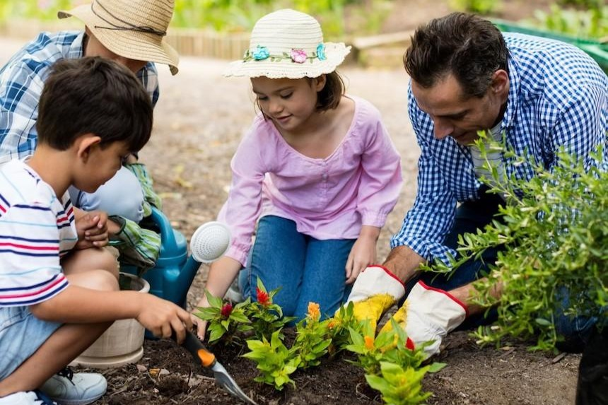

Discover creative and engaging activities you can do with your children at home to promote growth, learning, and stronger bonds. These activities foster emotional, cognitive, and physical development while spending quality time together.
Spend time reading with your child daily. This helps improve language skills, builds imagination, and fosters a love for books.

Engage in creative projects like drawing and crafting. It enhances motor skills, creativity, and allows children to express themselves.

Involve your child in simple cooking tasks, teaching them math, responsibility, and safety while having fun in the kitchen.

Teach kids about nature by planting flowers or vegetables. It fosters responsibility, patience, and helps them learn about the environment.
Playing games and solving puzzles helps children develop critical thinking and problem-solving skills while having fun.

Encourage physical activities like playing catch, going for a walk, or riding bikes to boost physical development and healthy habits.

Be actively involved in your child’s homework to help them understand their lessons and encourage a love for learning.

Share stories from your childhood or make up new ones to improve language skills and imagination, while building a strong bond.

Listening to music or dancing together helps develop rhythm and coordination, while creating fun and lasting memories.

Have regular one-on-one talks with your child, asking about their day, feelings, and thoughts. Active listening builds a strong emotional connection and encourages open communication.